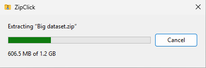
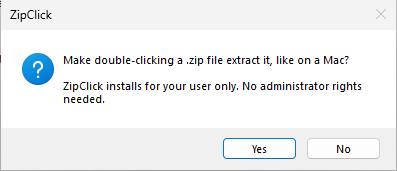
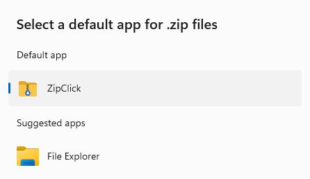
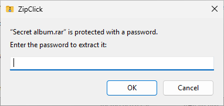

ZipClick
ZipClick
Double-click a zip file on Windows and get the files, like on a Mac.
Normally, double-clicking a zip on Windows opens it as if it were a folder. To actually get the files out you have to right-click, choose Extract All, confirm where they should go, and then close the extra window that pops up. ZipClick replaces all of that with the double-click: the files appear right next to the zip.
It does the same for .rar, .7z and .tar.gz files, and asks for the password when there is one.
Version 0.4.0, 7.3 MB, free. Got a Snapdragon (ARM) laptop? Use the ARM64 version instead.
Three double-clicks. The last zip is 1.2 GB, so a progress window shows up for a few seconds.
What happens when you double-click a zip
If the zip contains one folder or one file, that's what you get, sitting next to the zip. If it contains a bunch of loose files, they go into a new folder with the zip's name, so they don't spill all over your Downloads. A .rar or .7z works the same way.
ZipClick never replaces anything you already have. If there's already a folder called "Photos", the new one is called "Photos 2".
When it's done, the new folder is selected in the window you were looking at, so you can open it straight away. Large zips get a small progress window, and Cancel really does cancel: nothing half-extracted is left lying around.

Installing
- Download ZipClick.exe and open it.
- Windows will probably show a blue "Windows protected your PC" box the first time. That's because I haven't paid for a code-signing certificate yet, not because something is wrong. Click More info, then Run anyway.
- ZipClick asks if you want zip files to work this way. Click Yes.

- Windows Settings opens on ZipClick's page. Click the box under .zip, choose ZipClick, then Set default. Windows insists that you make this choice yourself; programs aren't allowed to do it for you. The other types, like .rar and .7z, are on the same page. If you skip them, Windows asks the first time you open one: pick ZipClick, then Always.

That's it. You don't need to be an administrator, and you don't need to restart anything.
Archives with a password
When a zip, .rar or .7z is protected with a password, ZipClick asks for it. Type it and press Enter. If it's wrong, it says so and lets you try again.

Questions
- Can I still look inside a zip without extracting it?
- Yes. Right-click it, choose Open with, then File Explorer.
- Does it work with .rar or .7z files?
- Yes, and with .tar, .tar.gz, .tgz, .tar.bz2, .tar.xz and .tar.zst too. You don't need 7-Zip or WinRAR. Very large .7z and .rar files take a few times longer than they would in 7-Zip, so a 1 GB .7z is about 20 seconds instead of 6.
- Does it connect to the internet or collect anything?
- No. It has no network code at all. When it extracts, it only writes inside the folder where your archive is. You can read the source code if you want to check.
- What languages does it speak?
- English, Portuguese (Portugal and Brazil), Spanish, French, German and Italian. It follows your Windows display language.
- How do I remove it?
- Settings > Apps > Installed apps, find ZipClick, then Uninstall. Zip files go back to opening like folders.